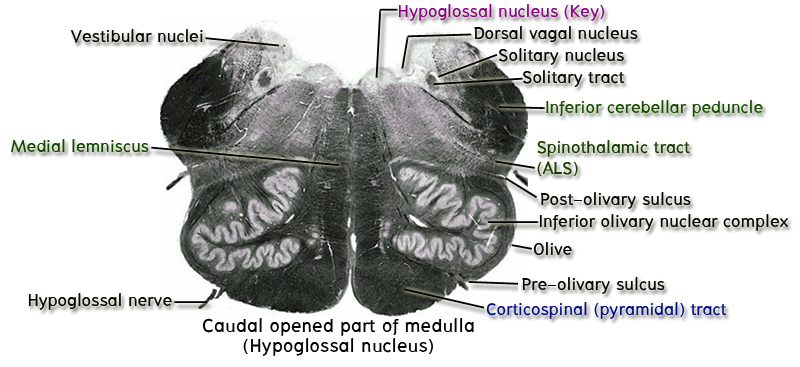
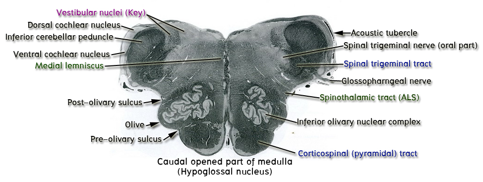

3. ระดับ caudal part of opened part of medulla หรือระดับ hypoglossal and vagal trigone

ในระดับนี้มี key structure ที่ต้องชี้แสดงคือ hypoglossal nuclei และ vagal nuclei
ให้สังเกตว่า medulla ระดับนี้เป็นระดับที่เป็น opened part แล้ว ให้ชี้แสดง hypoglossal trigone ซึ่งเป็นเนินที่อยู่บริเวณ 2 ข้างของแนว midline บริเวณ posterior part ของ section ถัดจาก hypoglossal trigoneไปทางด้าน lateral และอยู่ medial กว่าแนว sulcus limitans ให้ชี้แสดง vagal trigone ถัดจาก vagal trigone ไปทาง lateral และ lateral กว่าแนว sulcus limitans ให้ชี้แสดง vestibular area ลึกกว่า hypoglossal trigone, vagal trigone และ vestibular area ให้ชี้แสดง hypoglossal nuclei, dorsal vagal motor nuclei และ vestibular nuclei ซึ่งเห็นเป็นบริเวณใส ๆ อยู่ลึกกว่าเนินดังกล่าวตามลำดับ
บริเวณ posterolateral angle ของ section และอยู่ถัดจาก vestibular area ไปทาง lateral ให้ชี้แสดง inferior cerebellar peduncle ซึ่งเห็นเป็นกลุ่มของ nerve fibers สีดำเข้ม
ให้ชี้แสดง spinal trigeminal tract และ spinal trigeminal nucleus ซึ่งอยู่ anteromedial ต่อ inferior cerebellar peduncle
ทางด้าน anterior ของ section บริเวณ 2 ข้างของ anterior median fissure ให้ชี้แสดง pyramids และ dorsal กว่า pyramid ยังคงเป็น medial lemnisci เหมือนเดิม
บริเวณ posterolateral กว่า pyramid ให้ชี้แสดงเนินนูนที่เรียกว่า olive ซึ่งถูก inferior olivary nuclear complex ดันให้นูนออกมา
ในร่องที่อยู่ระหว่าง olive กับ pyramid (preolivary sulcus) ให้ชี้แสดง rootlets of hypoglossal nerve (CN XII) ที่โผล่ออกมา
4. ระดับ rostral part of opened part of medulla หรือระดับ cochlear nuclei

ในระดับนี้ key structure ที่ต้องชี้แสดงคือ dorsal cochlear nuclei ซึ่งเป็นบริเวณใส ๆ ที่ดันส่วน lateral recess ของ posterior part ของ medulla ระดับนี้ให้นูนขึ้นมากลายเป็น acoustic tubercle
บริเวณทางด้าน medial กว่า acoustic tubercle ส่วนใหญ่ยังเป็น vestibular area ซึ่งลึกลงไปมี vestibular nuclei อยู่
ที่ผิวของ posterior surface ของ medulla ระดับนี้ในบาง slide set อาจเห็น stria medullaris ซึ่งเป็น bundles of myelinated fibers ทอดขวางอยู่ก็ได้